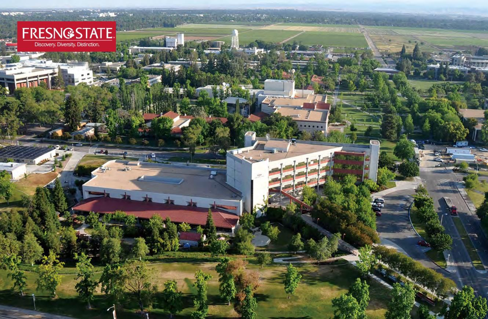
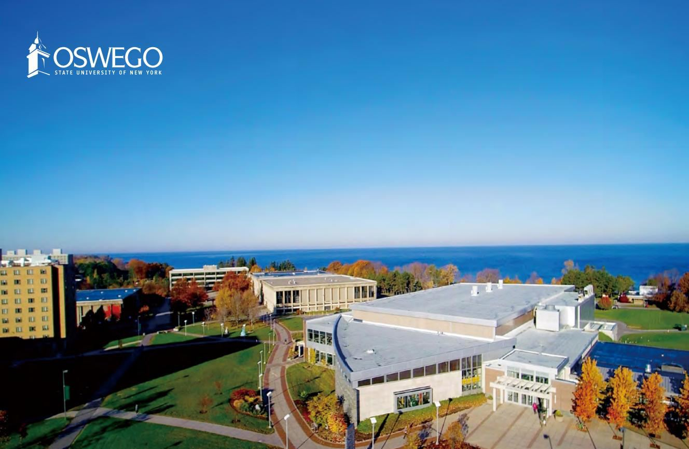
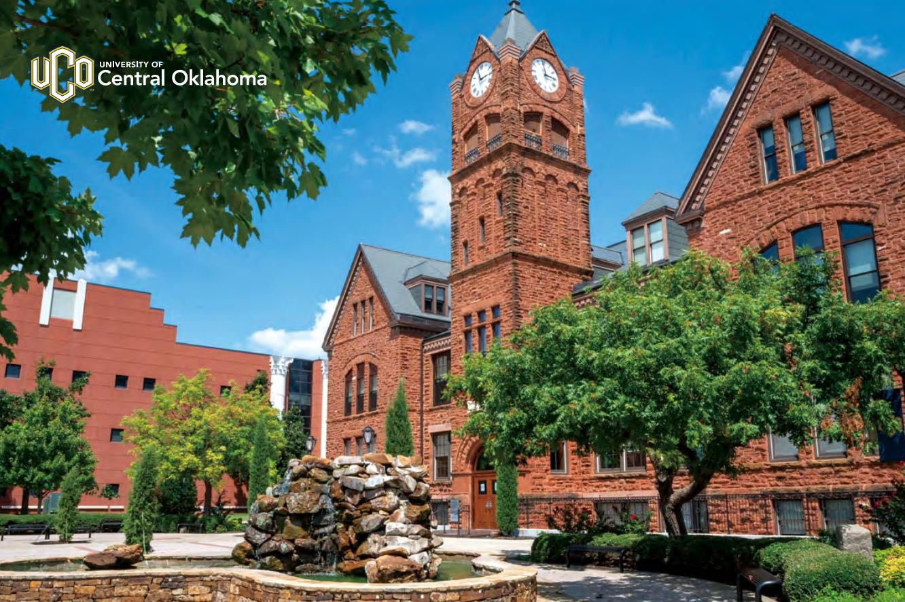
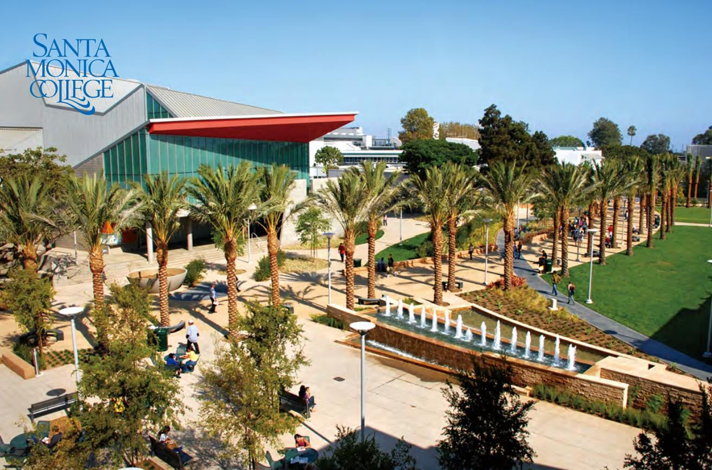

이 과정을 고르는 다섯 가지 이유
2027학년도 입학설명회에서 교육원이 정리한 다섯 가지입니다. 파트너 대학은 미국 8곳·캐나다 1곳으로, 모두 이 과정 수료를 공인영어 대신 인정하는 학교입니다.
- 국내 6개월 ESL + 교양 15~24학점으로 입학
미국 대학에 바로 가려면 보통 iBT TOEFL 79점 이상, SAT 1,100점 이상, 고교 내신 4등급 이상이 필요합니다. 이 과정은 국내 6개월 미국대학 준비 ESL 과정 이수로 토플 제출을, 경제학·사회학·심리학·대학수학 등 국내대학 교양 15~24학점으로 SAT·내신 제출을 대신합니다. - 교양 15학점은 졸업학점으로 인정
국내에서 딴 교양학점이 미국 대학 졸업학점으로 인정되어 학업 기간이 한 학기 줄고, CLEP 시험으로 3~15학점을 더 딸 수 있습니다. - 연간 총비용 약 $25,000~34,000
학비·식비·기숙사비·의료보험료를 합친 파트너 대학의 연간 비용 범위입니다(설명회 자료 기준). - 체계적인 현지 학생 관리
공항 픽업·기숙사 입실·은행 계좌·수강신청 같은 초기 정착 서비스에, 학업·취업·대학원 진학·편입 상담이 이어집니다. - OPT 인턴십·취업 지도
국제학생 임시 노동허가(OPT)로 텍사스·실리콘밸리·뉴욕주 회사에서 인턴십과 취업을 준비합니다.
파트너 대학 9곳 — 지역별로
학교명을 누르면 요건·비용·정착 서비스까지 정리된 학교별 안내로 이동합니다. 아래 한 줄 요약은 설명회 자료 기준이라 요강 표의 금액과 산정 기준이 다를 수 있습니다.
텍사스
미국 텍사스 커머스 · 주립대학
1889년 설립 · 재학생 13,086명 · $1,000 장학금으로 In-State 학비 적용(연 $34,000 → $23,000) · 2011년부터 현지 교수진 정착 프로그램
요강 기준 연간 $28,024 (학비 $18,216 + 기숙사·식비 $9,808)
캘리포니아
미국 캘리포니아 프레즈노 · 주립대학
1911년 · 24,585명 · CSU 중 가장 저렴한 학비 · 실리콘밸리 2시간 반
요강 기준 연간 $31,555 (학비 $19,921 + 기숙사·식비 $11,634)
미국 LA 산타모니카 · 커뮤니티컬리지
1929년 · 30,830명 · UCLA 편입률 1위 · 연 $22,227(학비 $10,656)
요강 기준 연간 $30,628 (학비 $11,789 + 기숙사·식비 $18,839)
미국 캘리포니아 플레전트힐 · 커뮤니티컬리지
1926년 · 약 18,000명 · UC버클리 편입 명문 · 연 약 $31,000
요강 기준 연간 $30,223 (학비 $13,000 + 기숙사·식비 $17,223)
미국 캘리포니아 쿠퍼티노 · 커뮤니티컬리지
1967년 · 약 20,000명 · UC버클리 편입 1위 · 실리콘밸리 중심
요강 기준 연간 $27,024 (학비 $10,224 + 기숙사·식비 $16,800)
뉴욕
미국 뉴욕주 오스위고 · 주립대학
1861년 · 약 7,000명 · 매년 $4,000 장학금 · 입학보장 · 상위 SUNY 편입 패스웨이
요강 기준 연간 $37,103 (학비 $19,255 + 기숙사·식비 $17,848)
미국 뉴욕 맨해튼 · 사립대학
1931년 · 3,500명 · 연 3학기제 조기 졸업 · 맨해튼 중심부
요강 기준 연간 $43,080 (학비 $31,080 + 기숙사·식비 $12,000)
오클라호마
미국 오클라호마 에드먼드 · 주립대학
1890년 · 13,842명 · 연 $24,000으로 가장 저렴 · 편입 장학금 연 $2,000~4,000
요강 기준 연간 $27,700 (학비 $17,800 + 기숙사·식비 $9,900)
캐나다
캐나다 토론토 · 공립 폴리테크닉
1967년 · 97,500명 이상 · 연 CAD $28,000 · 졸업 후 3년 PGWP · $5,000 장학금
요강 기준 연간 $31,000 (학비 $17,000 + 기숙사·식비 $14,000)





사진: 2027학년도 입학설명회 자료
그 밖의 진학처 11곳 — DET 명문대 패스웨이
위 9곳 외에 ELC 수료에 DET(듀오링고 영어 시험) 점수를 더해 지원하는 학교가 11곳 있습니다. 뉴욕주립대 스토니브룩·버팔로·올버니, 애리조나주립대, 텍사스 주립대 4곳 등이 여기에 속합니다.
뉴욕주립대 스토니브룩 · 뉴욕주립대 버펄로 · 뉴욕주립대 올버니 · 오리건주립대학교 · 애리조나주립대학교 · 네바다대학교 라스베이거스 · 노스텍사스대학교 · 텍사스대학교 샌안토니오 · 휴스턴대학교 · 텍사스주립대학교 · 샌프란시스코주립대학교
뉴욕주립대 5개 캠퍼스는 SUNY 진학 가이드, 텍사스 5개 학교는 텍사스 주립대 5곳에서 묶어 볼 수 있습니다.
출국부터 첫 수업까지
- 국내 6개월 영어과정 + 교양 15학점
- 미국 출국·도착
- 미국 공항 픽업
- 기숙사·숙소 입실
- 오리엔테이션·캠퍼스 투어
- 담당교수 미팅
- 전공별 수업 시작
설명회에서 교육원이 쓰는 말이 있습니다. "못 가는 유학이 아니라 다른 방식의 유학", 그리고 "혼자가 아닌 친구랑 같이 가는 유학". 한 기수가 서울에서 같이 6개월을 보내고 같은 학교로 함께 출발하는 구조라 나온 말입니다. 교육원은 2011년 설립 이후 1,000명 넘는 학생을 이 방식으로 보냈습니다.
토플면제교육원 더 보기: 과정 전체 안내 · 고3·졸업생 안내 · 재수생 안내 · 검정고시 안내 · 대학생·편입 안내 · 대학 20곳 비교표 · SUNY 진학 가이드 · UC 편입 경로 · 텍사스 주립대 · 현지 정착 서비스 · 장학금·비용 절감 · 용어 풀이
아직 중·고등학생이라면 중·고등 유학 안내와 세인트폴 대치 아카데미가 앞 단계입니다.
파트너 대학 진학 상담
희망 지역(텍사스·캘리포니아·뉴욕·캐나다)과 전공, 예산을 남겨 주세요.
9곳 중 맞는 학교를 골라 요건과 비용을 안내해 드립니다.
- 모집 45명 선착순 — 마감 전 상담을 권합니다
- 영어 성적이 없어도 지원 가능 여부 확인
- 대학별 비용·장학금 절감 방법까지 함께 안내